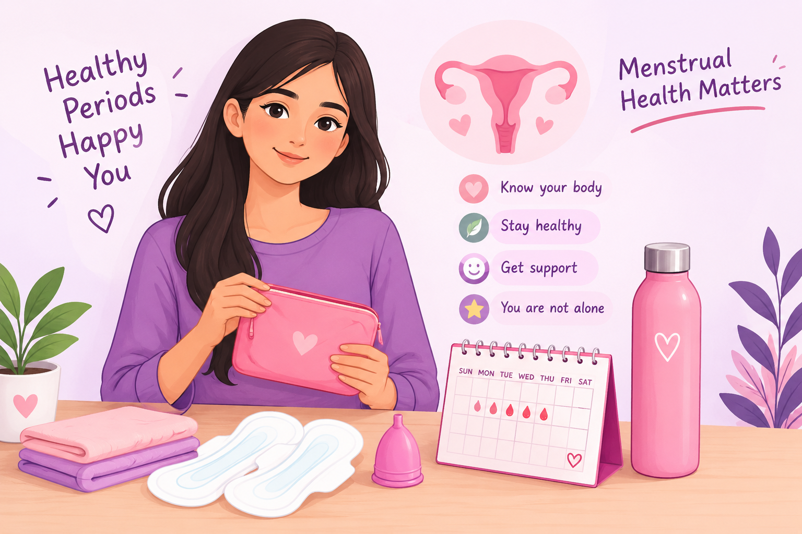

🩸 Menstrual Health
Understand your period, take care of your body, and know when it is important to seek medical help.

🌸 Periods Are Natural
A menstrual period is a normal part of the menstrual cycle. It happens when the lining of the uterus leaves the body through the vagina.
Periods can be different for different people. The bleeding, pain and other symptoms can vary from one person to another.
💗 How Can Your Period Affect You?
Some people experience physical or emotional changes before or during their period.
Cramps
Lower tummy pain or cramps may happen before or during a period.
Tiredness
Some people may feel tired or have changes in energy.
Mood Changes
Hormonal changes can be associated with mood changes, irritability or feeling emotional.
Bloating
Some people experience bloating or breast tenderness.
Headache
Headaches can occur around the time of a period.
Everyone Is Different
Some people have few symptoms, while others experience more.
💗 How Should You Take Care?
✅ What To Do
- Keep yourself hydrated.
- Eat regular, balanced meals.
- Get enough sleep and rest.
- Try gentle exercise such as walking or stretching if you feel comfortable.
- Keep your menstrual products clean and change them regularly.
- Keep track of your period and symptoms if it helps you notice changes.
- Use a warm bath or heat pad for period cramps if it feels helpful.
❌ What To Avoid
- Do not ignore severe or unusual pain.
- Do not ignore unusually heavy bleeding.
- Avoid using products that irritate the genital area.
- Do not feel ashamed to ask for help.
- Do not assume that very painful periods are something you always have to tolerate.
🚨 When Should You Talk to a Doctor?
Speak with a qualified healthcare professional if your period problems are affecting your daily life.
- Your period pain is severe or getting worse.
- Your periods become much heavier than usual.
- You need to change a pad or tampon every 1–2 hours because of heavy bleeding.
- Your periods last longer than 7 days.
- You bleed between periods or after sex.
- Your periods become very irregular or change noticeably.
🏥 Need Medical Help?
If you are concerned about your symptoms, speak with a qualified doctor or gynecologist.